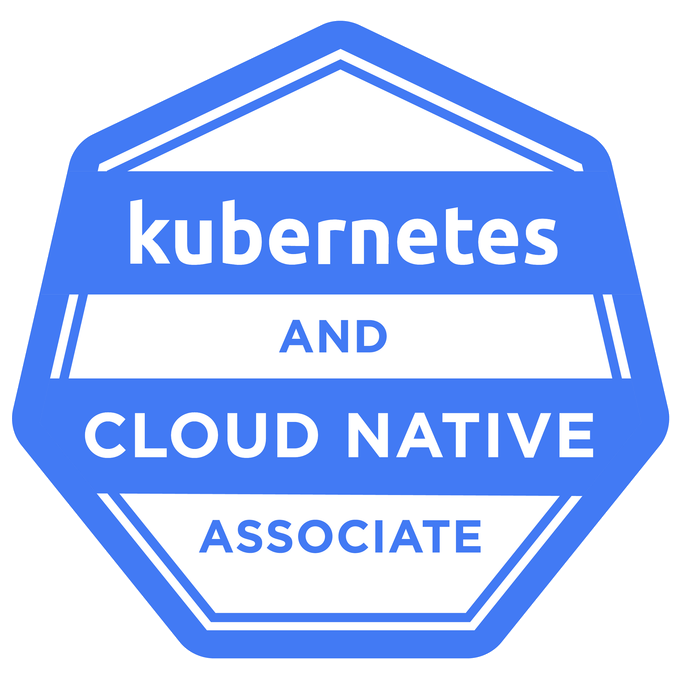

Industry Certifications
Expert-Level Certifications Across Modern Cloud Platforms

About CloudVero
CloudVero was founded by experienced DevOps professionals with extensive, hands-on expertise within AWS environments. Having supported organizations of all sizes, from innovative startups to Fortune 500 enterprises, we've worked directly alongside teams to resolve production issues in real-time, implement scalable solutions, optimize cloud costs using best practices, and build infrastructure that is reliable and maintainable. We created CloudVero to bring that same level of operational excellence and strategic guidance directly to the organizations that need it most.
During our time at AWS, we partnered with engineering teams of all sizes, but a few things remained the same. The pattern was remarkably consistent: organizations adopted Kubernetes as the industry standard, without fully accounting for the operational complexity that comes with it.
Engineers hired to build product features were quickly in deep cluster troubleshooting scenarios — debugging pod failures, chasing networking issues, and deciphering YAML configurations, often without sufficient Kubernetes experience. Many were forced to learn in real time during active production incidents, costing the company thousands of dollars per minute of downtime. The cognitive load of managing a platform they never signed up to own was burning teams out, slowing delivery, and driving cloud costs higher than desired.
We built CloudVero to give these teams something they couldn't easily find: honest, experienced infrastructure guidance from people who've seen what works and what doesn't — at every scale.
We design for what your business actually needs — not what looks impressive on a conference slide. In our experience, the best architecture is the one your team can operate, scale, and maintain with confidence.
Every engagement delivers infrastructure you fully control — including Terraform code, documentation, and operational runbooks. No obligated vendor lock-in, no hidden dependencies.
If you don't need Kubernetes, we'll tell you. If a simpler solution is a better fit, we'll recommend it. Our expert guidance is driven by your needs, not our preferences.
Our Mission
CloudVero exists to simplify cloud infrastructure for modern engineering teams. We help organizations cut through complexity, build reliable systems, and focus on what matters most.
We believe great work is an act of service. We approach every engagement with integrity, clarity, and a commitment to doing the work right — delivering solutions we stand behind.
Our Vision
We aim to continue building with purpose. To evolve CloudVero from a consulting firm into a platform — building tools, automation, and systems that solve real infrastructure challenges at scale while staying grounded in the values that guide our work, and committed to serving others with purpose and integrity.
The team
Co-Founder
Platform engineer and cloud infrastructure specialist focused on building scalable, production-ready systems. Jason works across Kubernetes , AWS, and DevOps environments to design resilient architectures, streamline deployments, and solve complex cloud infrastructure challenges. His years of experience include working as a tenured cloud professional at Amazon Web Services (AWS), where he supported large-scale cloud environments and enterprise workloads.
Co-Founder
Cloud and DevOps engineer focused on building scalable, automated, and production-ready systems with operational excellence. In his many years of experience as a former senior cloud professional at Amazon Web Services (AWS), Domonic has a strong background in building and supporting modern cloud environments using AWS, CI/CD, and infrastructure as code at scale to meet customer business needs.
Industry Certifications

Our toolkit
Every engagement requires the right tools for the job. Here are just a few we've used across successful client engagements.
We're engineers first. Book a call and we'll have a real technical conversation about what you're building and how we can help.
Book Your Free Discovery Call